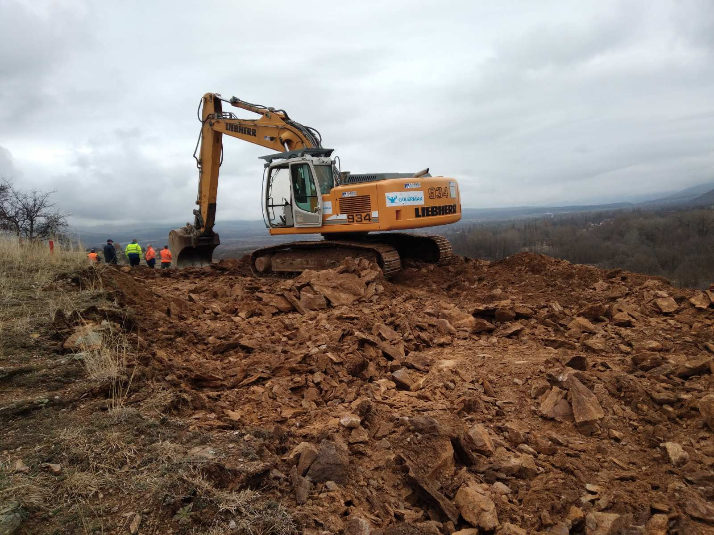
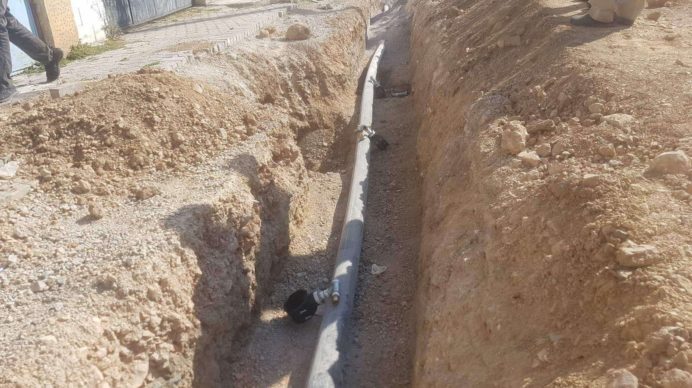
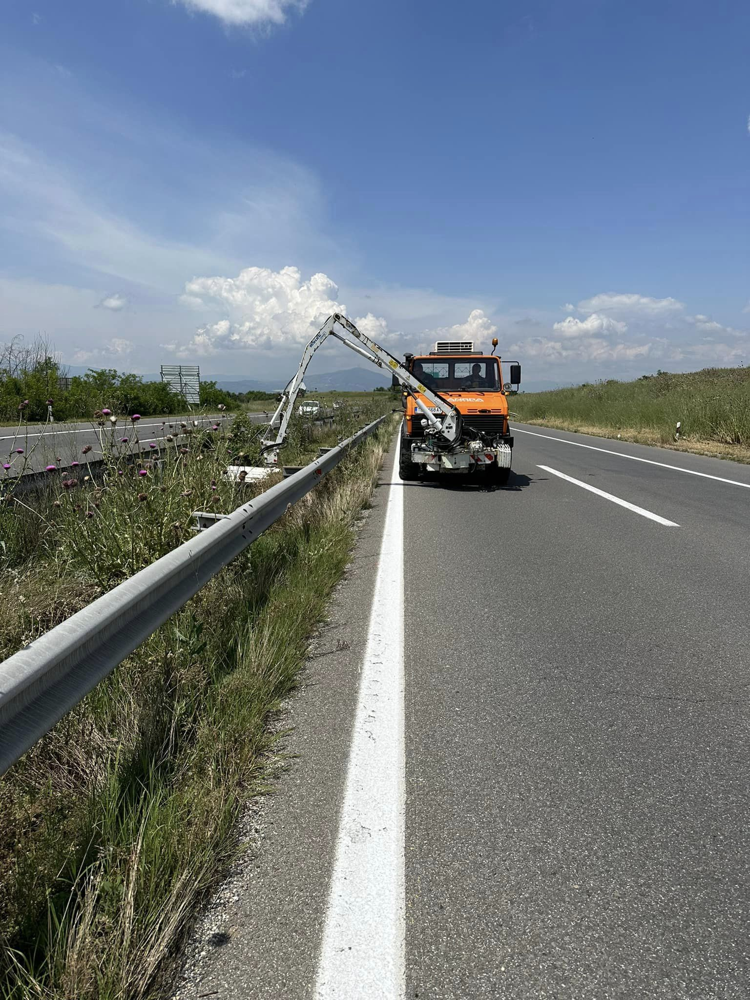
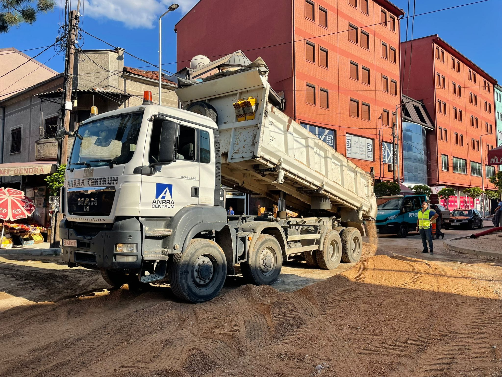
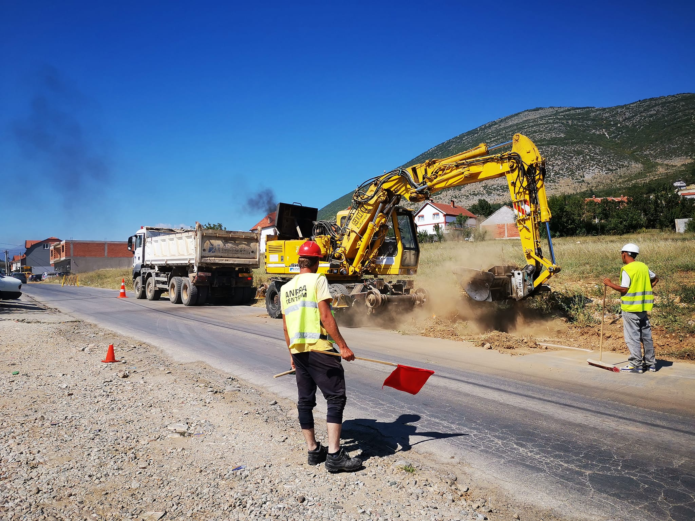
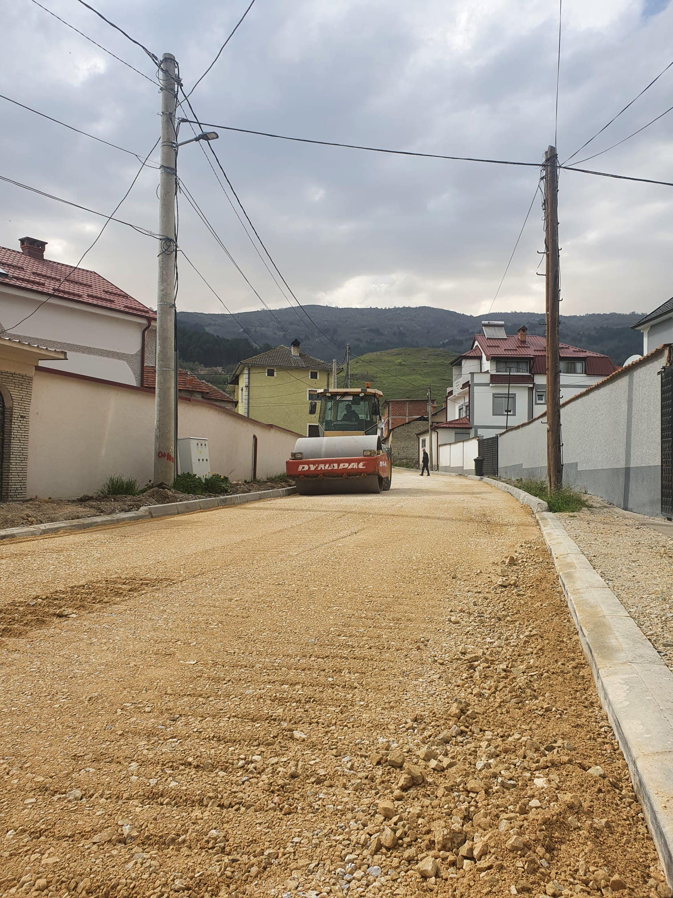

Projekti: Ndërtimi dhe përfundimi i punimeve të mbetura të dytë seksioni, Beljakovce - Kriva Pallanka, Koridori VIII.
Projektet e papërfunduara



Projektet: I- Rikonstruksioni i rrugës 108
II- Ndërtimi i ujësjellësit në Reçicë Tetovë
III- Ndërtimi i rrjetit të kanalizimit fekal dhe atmosferik në territorin e Komunës së Tetovës
Autoriteti Kontraktues: Komuna e Tetovës.
Përshkrimi i projektit:
Projektet përfshijnë ndërtimin e ujësjellësit në një pjesë të qytetit, në
sistemi fekal dhe atmosferik në të gjithë qytetin dhe rikonstruksioni i rrugës 108.



Projekti: Mirëmbajtja dhe kositja e barit përgjatë autostradës
Autoriteti Kontraktor: Ndërmarrja Publike për Rrugët Shtetërore.
Përshkrimi i projektit:
Ky projekt përfshin kositjen e barit dhe pemëve, grumbullimin e plehrave, përgjatë autostradave të
Maqedonia e Veriut në një periudhë dyvjeçare.



Finished Projects
Projekti: Rindërtimi i rrugës Strasho Pinxhur Tetovë
Autoriteti Kontraktues: Komuna e Tetovës
Përshkrimi i projektit:
Rruga Strasho Pinxhur Tetovë është në qendër të Tetovës dhe është ndër më të frekuentuarat
vende. Projekti përfshinte rikonstruksionin e rrugës, instalimin e ri të
Ujësjellësi, instalimi i ndriçimit, trotuareve dhe sinjalistikës rrugore.



Projekti: Rehabilitimi i rrugës rajonale R1206, pjesa Karpalak-Zhelinë.
Autoriteti Kontraktor: Ndërmarrja Publike për Rrugët Shtetërore
Përshkrimi i projektit:
Kjo rrugë lidh qytetin e Tetovës me Shkupin dhe disa fshatra
Projekti përfshin zgjerimin e rrugës, rehabilitimin e rrugës, asfaltimin me dy shtresa, tombinat,
kanalet, kanalizimet e stuhisë dhe sistemet e sinjalizimit mbi një gjatësi prej 16 km.



Projekti: Rindërtimi i rrugës 194 Tetovë.
Autoriteti Kontraktues: Komuna e Tetovës.
Përshkrimi i projektit:
Rruga 194 gjendet në periferi të qytetit të Tetovës.
Ky projekt përfshinte rikonstruksionin e rrugës, shtrimin e asfaltit me dy shtresa, të
vendosja e trotuarit në të dy anët e rrugës, dhe ndriçimi i rrugës në a
gjatësi 300 m.
